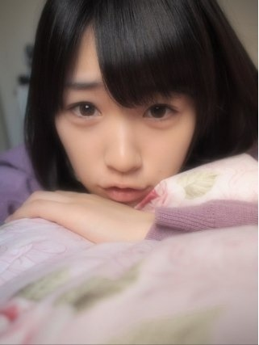
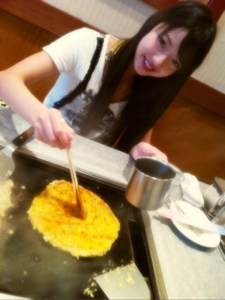
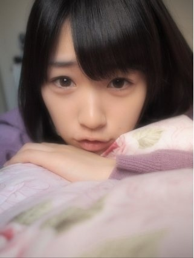
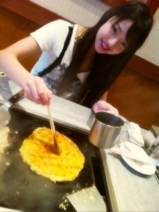

2012/0520Sun（´-`）.｡oO(かずみん×65
こんばんは^^

いつも応援ありがとうございます！
前回のコメント、
みなさんから
浪漫の時の600円のりんごは食べたの？
という質問が沢山あったので答えます！
600円のりんご...
近くにいたメンバーと食べました(^^)
美味しかったです( ´ ▽ ` )ﾉ
-------
今日は名古屋の全国握手会でした！
久しぶりの名古屋！
そしておいでシャンプーツアー初日(^-^)!!
ライブはやっぱり楽しい！
猛暑でしたが、汗をかきながら全力で
披露できてよかったです(^^)
握手会も(*^^*)
暑い中来てくださったみなさん、
本当にありがとうございました♪
-------
名古屋に行く前、
まあやとお好み焼きを食べに
いきました(*^^*)

さすが広島出身！
美味しかったです♪(´ε｀ )
また食べにいこうね(^-^)
-------
明日は乃木どこ収録です！
次はどんなことにチャレンジするのかな？
乃木どこの影響力って大きいですよね^^
握手会などでファンの皆様や小さい子にも
かずみだぜぜぜぜぜーいをやって
もらえて嬉しいです♪
大好きな番組だから、
これからも全力でのぞもうと思います！
それでは、今日もお疲れ様でした(*^^*)
おやすみなさい...☆

いつも応援ありがとうございます！
前回のコメント、
みなさんから
浪漫の時の600円のりんごは食べたの？
という質問が沢山あったので答えます！
600円のりんご...
近くにいたメンバーと食べました(^^)
美味しかったです( ´ ▽ ` )ﾉ
-------
今日は名古屋の全国握手会でした！
久しぶりの名古屋！
そしておいでシャンプーツアー初日(^-^)!!
ライブはやっぱり楽しい！
猛暑でしたが、汗をかきながら全力で
披露できてよかったです(^^)
握手会も(*^^*)
暑い中来てくださったみなさん、
本当にありがとうございました♪
-------
名古屋に行く前、
まあやとお好み焼きを食べに
いきました(*^^*)

さすが広島出身！
美味しかったです♪(´ε｀ )
また食べにいこうね(^-^)
-------
明日は乃木どこ収録です！
次はどんなことにチャレンジするのかな？
乃木どこの影響力って大きいですよね^^
握手会などでファンの皆様や小さい子にも
かずみだぜぜぜぜぜーいをやって
もらえて嬉しいです♪
大好きな番組だから、
これからも全力でのぞもうと思います！
それでは、今日もお疲れ様でした(*^^*)
おやすみなさい...☆
2012/05/20 01:06
コメント(286)
ヤッシーです(^-^)v
名古屋に行った人がうらやまし過ぎる!!
行きたかったけど行けない…
また泣きそう…(T^T)
かずみん!!
名古屋でいっぱい握手して先週、俺と握手したの忘れただろ(笑)?
忘れてたら来月の個別握手会でめっちゃ泣くからね!!
へばっまずな(^-^)/~~
名古屋に行った人がうらやまし過ぎる!!
行きたかったけど行けない…
また泣きそう…(T^T)
かずみん!!
名古屋でいっぱい握手して先週、俺と握手したの忘れただろ(笑)?
忘れてたら来月の個別握手会でめっちゃ泣くからね!!
へばっまずな(^-^)/~~
怒涛の更新ラッシュにかずみんが紛れてた。
ってかかずみんってなんか他と違うよね。
それがいい
ってかかずみんってなんか他と違うよね。
それがいい
どーも！オレンジです！
かずみん久しぶりぃぃぃ(*^^*)(*^^*)
名古屋行きたかったな(ToT)
ハウス！見たかったな(ToT)
てか、昨日足首怪我して今松葉杖なんだわ(笑)
次会うまでには治るよ(^o^)/
600円リンゴ絶対美味しいよね(*^^*)
この前1本300円のバナナ買ったよ(笑)
うん。美味しいよね(^q^)
話ずれちゃった(笑)
明日は収録なんだね(*^^*)
ゆっくり休んでね(^^)d
それじゃあこの辺で！
今日はお疲れ様(*^^*)
明日も頑張ろう
愛羅武勇
 オレンジ
オレンジ
かずみん久しぶりぃぃぃ(*^^*)(*^^*)
名古屋行きたかったな(ToT)
ハウス！見たかったな(ToT)
てか、昨日足首怪我して今松葉杖なんだわ(笑)
次会うまでには治るよ(^o^)/
600円リンゴ絶対美味しいよね(*^^*)
この前1本300円のバナナ買ったよ(笑)
うん。美味しいよね(^q^)
話ずれちゃった(笑)
明日は収録なんだね(*^^*)
ゆっくり休んでね(^^)d
それじゃあこの辺で！
今日はお疲れ様(*^^*)
明日も頑張ろう
愛羅武勇
最初の写真可愛すぎ(>_<)
何でかずみんはそんなに可愛いんだよー!!
何でかずみんはそんなに可愛いんだよー!!
握手会お疲れ様♪
暑い中大変だったね。
体調大丈夫？
体には気を付けてね！！
大阪での全握楽しみにしてるよ♪
かずみんお疲れ( ´ ▽ ` )ﾉ
今日は楽しかったよ♪
久々にかずみんの顔見て話せてよかった\(//∇//)\
ミニライブは残念ながら
ほぼ反対で見えなかったけど
自己紹介の時に見えたから良しとするか♪( ´▽｀)
じゃあ、明日の乃木どこ頑張って(｀_´)ゞ
今日は楽しかったよ♪
久々にかずみんの顔見て話せてよかった\(//∇//)\
ミニライブは残念ながら
ほぼ反対で見えなかったけど
自己紹介の時に見えたから良しとするか♪( ´▽｀)
じゃあ、明日の乃木どこ頑張って(｀_´)ゞ
更新ありがとう♪
握手会お疲れ様(*^_^*)
行きたかったなぁ?(>_<)
体調大丈夫？
無理しないでね♪
この写メの一実さん可愛すぎ(≧∇≦)
握手会お疲れ様(*^_^*)
行きたかったなぁ?(>_<)
体調大丈夫？
無理しないでね♪
この写メの一実さん可愛すぎ(≧∇≦)
今日もおちかれぃ(^o^)／
.
とゆぅことで、名古屋全握お疲れさまでしたm(_ _)m
どぉ楽しめた？
って聞かなくても分かるか!!笑
.
お好み焼きうまそー(≧∇≦)
なんかお腹すいてきちゃったな♪照
.
明日は乃木どこの収録なんだ！
ホントに乃木どこおもしろいからオレも大好き!(b^ー°)
収録頑張ってねo(^-^)o
.
とりあえず今回はここまで。
じゃあ、次のblogまで(^O^)ノシ
.
とゆぅことで、名古屋全握お疲れさまでしたm(_ _)m
どぉ楽しめた？
って聞かなくても分かるか!!笑
.
お好み焼きうまそー(≧∇≦)
なんかお腹すいてきちゃったな♪照
.
明日は乃木どこの収録なんだ！
ホントに乃木どこおもしろいからオレも大好き!(b^ー°)
収録頑張ってねo(^-^)o
.
とりあえず今回はここまで。
じゃあ、次のblogまで(^O^)ノシ
みーたんばんちゃ(^Q^)/^
ゆーたんなう
暑かったけど最高に沸けたライブと握手会だったよ(●^ー^●)
25ループ目くらいから一番最初に過疎りはじめ焦りなからも駆け足で回ったけど11枚出しで断念゜。(p>∧<q)。゜゜
推しレーンが最初に終了する悔しさと1枚出しで完走できない苛立ちでかずみんの顔を見るなり号泣(;^_^A
引いたよね(汗)orz
ごめんなさいねm(__)m
顔も腕もタコさんだぁ(☆-◎;)
今日はゆっくりおやすみなさい
ぢゃぁ
(一実o^∀^o46)
↑
これ大事
ゆーたんなう
暑かったけど最高に沸けたライブと握手会だったよ(●^ー^●)
25ループ目くらいから一番最初に過疎りはじめ焦りなからも駆け足で回ったけど11枚出しで断念゜。(p>∧<q)。゜゜
推しレーンが最初に終了する悔しさと1枚出しで完走できない苛立ちでかずみんの顔を見るなり号泣(;^_^A
引いたよね(汗)orz
ごめんなさいねm(__)m
顔も腕もタコさんだぁ(☆-◎;)
今日はゆっくりおやすみなさい
ぢゃぁ
(一実o^∀^o46)
↑
これ大事
どうも～
あのリンゴ本物だったんだｗ
一時期リンゴにハマってて毎日食べてたよ～
「王林」って品種が好き
んで、名古屋全握お疲れ様でした～
暑かったみたいだけど大丈夫だった？
暑いの苦手だから行ってたら握手する前に帰ってたかもしれないｗ
幕張は室内で良かったｗ
乃木どこの収録もがんばってねぇ～
また公開収録あるといいなぁ～
あのリンゴ本物だったんだｗ
一時期リンゴにハマってて毎日食べてたよ～
「王林」って品種が好き
んで、名古屋全握お疲れ様でした～
暑かったみたいだけど大丈夫だった？
暑いの苦手だから行ってたら握手する前に帰ってたかもしれないｗ
幕張は室内で良かったｗ
乃木どこの収録もがんばってねぇ～
また公開収録あるといいなぁ～
名古屋の握手会お疲れ様です
かずみさんに初コメです
最近、偶然を言い訳にして をヘビロテで聴いてるんですが、
かずみさんのソロパートの「密かに憧れてる あなたがこんなに近くにいるのなら」のところが、マジで好きなんです！！！
ここ数ヶ月で聴いた歌の中で一番好きです。
アイドルとか関係なく、ここ数ヶ月聴いた歌の中で、一番好き。
もう本当に歌ってくれてありがとう。
今度できれば握手会で直接お礼を言いに行きますね
かずみさんに初コメです
最近、偶然を言い訳にして をヘビロテで聴いてるんですが、
かずみさんのソロパートの「密かに憧れてる あなたがこんなに近くにいるのなら」のところが、マジで好きなんです！！！
ここ数ヶ月で聴いた歌の中で一番好きです。
アイドルとか関係なく、ここ数ヶ月聴いた歌の中で、一番好き。
もう本当に歌ってくれてありがとう。
今度できれば握手会で直接お礼を言いに行きますね
|∀゜)＜まいどまいど！！
|∀゜)＜さのぞうだす！
|∀゜)＜今日は名古屋全握おつですた！
|∀゜)＜かなり暑かったみたいやけど
|∀゜)＜メンバーもファムも大丈夫やったんカナ？
|∀゜)＜いやいや
|∀゜)＜今日行けなかったのが
|∀゜)＜無念すぎるZE☆
|∀゜)＜やっぱりライブ見たいなー
|∀゜)＜幕張の全握は７月やし
|∀゜)＜まだまだ先やもんなー
|∀゜)＜まぁ
|∀゜)＜楽しみに待つしか！！
|∀゜)＜とりあえずね
|∀゜)＜来週のミニ個別に行くから
|∀゜)＜よろしくだす！
|∀゜)＜ほなまたー！
|∀゜)ノシ
|∀゜)＜さのぞうだす！
|∀゜)＜今日は名古屋全握おつですた！
|∀゜)＜かなり暑かったみたいやけど
|∀゜)＜メンバーもファムも大丈夫やったんカナ？
|∀゜)＜いやいや
|∀゜)＜今日行けなかったのが
|∀゜)＜無念すぎるZE☆
|∀゜)＜やっぱりライブ見たいなー
|∀゜)＜幕張の全握は７月やし
|∀゜)＜まだまだ先やもんなー
|∀゜)＜まぁ
|∀゜)＜楽しみに待つしか！！
|∀゜)＜とりあえずね
|∀゜)＜来週のミニ個別に行くから
|∀゜)＜よろしくだす！
|∀゜)＜ほなまたー！
|∀゜)ノシ
握手会お疲れー(^-^)/
ライブ早く生でみたいな♪
7月7日が待ち遠しいぜ！！
お好み焼き美味しそう(^o^)
大好物だあぁー！！
乃木どこいつも楽しみにみてるよ♪
かずみんがいつも輝いてる気がする！
明日も楽しみ(*^^*)
それじゃ今日はゆっくり休んでね(^^)
って言われなくても、今の時間起きてないかf(^^;笑
おやすみ
おつかれ～(^o^)／
お好み焼きうまそ～
まあや、と仲いいね(^-^)g"
質問！
かずみんは日焼けしてない？
byチャンボーだゼゼゼゼィ(笑)
お好み焼きうまそ～
まあや、と仲いいね(^-^)g"
質問！
かずみんは日焼けしてない？
byチャンボーだゼゼゼゼィ(笑)
かずみん、握手会おつかれ～！
流石にこっちから名古屋までは行けなかったけど、
今頃ライブしてるのかなー、握手してるのかなーって
想像を膨らませてたよ。
仕事場でね(苦笑
ライブは楽しいだろうけど、猛暑の中で
無理しすぎて倒れないように気をつけてね。
あー、こんな時間(深夜2時過ぎ)にブログ見たから、
お好み焼き食いたくなってきた・・・ｗ
流石にこっちから名古屋までは行けなかったけど、
今頃ライブしてるのかなー、握手してるのかなーって
想像を膨らませてたよ。
仕事場でね(苦笑
ライブは楽しいだろうけど、猛暑の中で
無理しすぎて倒れないように気をつけてね。
あー、こんな時間(深夜2時過ぎ)にブログ見たから、
お好み焼き食いたくなってきた・・・ｗ
握手会お疲れさま！
かずみだぜぜぜぜぜーい…
乃木どこで見た時の衝撃ハンパなかった（笑）
そしてお好み焼きが美味しそう( ´ ▽ ` )
お疲れ様です。
パワーアップした全握
楽しかったです♪（^^)
乃木坂単独のイベントすると
天候に恵まれてるのは
偶然かな？（・∀・）
暑かったけど
ハウス初披露ありと楽しかったです♪
やっぱり乃木坂最高です♪（・∀・）
パワーアップした全握
楽しかったです♪（^^)
乃木坂単独のイベントすると
天候に恵まれてるのは
偶然かな？（・∀・）
暑かったけど
ハウス初披露ありと楽しかったです♪
やっぱり乃木坂最高です♪（・∀・）
今日
握手会いったまっきーだょ♪
本当に楽しく握手できて
めっちゃいい思い出になったよ(//∇//)
明日の
野球の試合頑張ってくるね♪
今日はゆっくり休んでな♪(ｏ・ω・)ノ))
次は
いつ会えるのかなぁ( ノД`)…
早く会いたいな(*^^*)
まっきーでした！
握手会いったまっきーだょ♪
本当に楽しく握手できて
めっちゃいい思い出になったよ(//∇//)
明日の
野球の試合頑張ってくるね♪
今日はゆっくり休んでな♪(ｏ・ω・)ノ))
次は
いつ会えるのかなぁ( ノД`)…
早く会いたいな(*^^*)
まっきーでした！
そっきゃー広島の人とかいるんでやんすね～～やっぱりじゃけんとかおっしゃるん
でやんすかね～（笑）なるほろ～名古屋でもそんな感じだったのでげすね～！(＾＾)！o(^-^)o
にしても上の画のかずみんとかも可愛い感じでしゅよね～よかばってん(∪o∪)。。。o(^-^)o
そーいやハウスってのは白石さんもお気に入りでやんしたよね～(∪o∪)。。。(＃^.^＃)
あの番組って日曜にとったり水曜にとったりするんでしゅよねー＼＾o＾／o(^-^)o
明日のは予告からなんか凝ってるぞみたいな感じでやんすよね～( ^^)Y☆Y(^^ )o(^-^)o
にしても畠中ちゃんって普段から面白い子ってイメージがついてまいましただがや～
！(＾＾)！o(^-^)o
でやんすかね～（笑）なるほろ～名古屋でもそんな感じだったのでげすね～！(＾＾)！o(^-^)o
にしても上の画のかずみんとかも可愛い感じでしゅよね～よかばってん(∪o∪)。。。o(^-^)o
そーいやハウスってのは白石さんもお気に入りでやんしたよね～(∪o∪)。。。(＃^.^＃)
あの番組って日曜にとったり水曜にとったりするんでしゅよねー＼＾o＾／o(^-^)o
明日のは予告からなんか凝ってるぞみたいな感じでやんすよね～( ^^)Y☆Y(^^ )o(^-^)o
にしても畠中ちゃんって普段から面白い子ってイメージがついてまいましただがや～
！(＾＾)！o(^-^)o
かずみん、こんばんわ～！
(*^-^)ノ
今日は暑い中ライブ&握手会お疲れちゃんね！
暑かったけど、屋外ライブって気持ち良かったべ？
俺も行きたかったわ～！
ってか、お好み焼きも良いけど、せっかく名古屋行ったなら味噌カツとか、ひまつぶし・・・否、ひつまぶしでも食べてくれば良かったのに(笑)
今回は行けなかったけど幕張全握でかずみんに会えるのを楽しみにしてるな！
ってか、写メヤバい！
カワユ過ぎてキュン死するわ・・・
(;´д｀)
今日はゆっくり休んでな！
(*^-^)ノ
今日は暑い中ライブ&握手会お疲れちゃんね！
暑かったけど、屋外ライブって気持ち良かったべ？
俺も行きたかったわ～！
ってか、お好み焼きも良いけど、せっかく名古屋行ったなら味噌カツとか、ひまつぶし・・・否、ひつまぶしでも食べてくれば良かったのに(笑)
今回は行けなかったけど幕張全握でかずみんに会えるのを楽しみにしてるな！
ってか、写メヤバい！
カワユ過ぎてキュン死するわ・・・
(;´д｀)
今日はゆっくり休んでな！
更新ありがとう、
疲れただろうに、夜中に更新お疲れ様
珍しく上に写真(´□｀)
しかも、なにこれ可愛い(//∇//)
やめて。
下にスクロールしたくないｗｗｗｗｗｗｗｗ
下にスクロールしないと600円のりんごがどうなったか分からん(笑)
コメント欄は別タブに開いてるからコメントできるけど、、、、詰んだ。
ここでコメント終わります。
お仕事頑張ってね。
ではでは
-----------
という茶番はさておいて←変なテンションは無視してくれ
名古屋の全国握手会お疲れ様＼(^o^)／
初日だからなぁ
ライブ楽しいし行きたかったんだけどね…今回はお見送りということで。来週に名古屋行くしね。
この前お台場で見たから大丈夫！
ああそっか、暑かったんだよね。
これから、もっと暑い中でライブ大変そうだろうな
負けずに頑張ってね。
------
まずい！非常にまずい。
この時間にお好み焼きｗｗ
「美味しかったです♪(´ε｀ )」
羨ましいです♪(´ε｀ )
明日だな明日。そうだ明日お好み焼き食べるか。
そして、乃木どこのディレクターズカットでかずみんがもんじゃ作れそうで…みたいなの思い出した。クリスマスの記憶…
-------
お！明日収録なのか！確かに影響力大きい(笑)
乃木坂あまり知らない友達もテレビのネタでよく話しかけてくれるよ。
かずみだ(ryは恥ずかしいです(笑)でも、1回くらいなら…
それでは今日も更新お疲れ様。。ありがとね。
明日全力出せるように
ぐっすり眠れてますように（－人－）
ではでは
写真可愛い(´□｀)
疲れただろうに、夜中に更新お疲れ様
珍しく上に写真(´□｀)
しかも、なにこれ可愛い(//∇//)
やめて。
下にスクロールしたくないｗｗｗｗｗｗｗｗ
下にスクロールしないと600円のりんごがどうなったか分からん(笑)
コメント欄は別タブに開いてるからコメントできるけど、、、、詰んだ。
ここでコメント終わります。
お仕事頑張ってね。
ではでは
-----------
という茶番はさておいて←変なテンションは無視してくれ
名古屋の全国握手会お疲れ様＼(^o^)／
初日だからなぁ
ライブ楽しいし行きたかったんだけどね…今回はお見送りということで。来週に名古屋行くしね。
この前お台場で見たから大丈夫！
ああそっか、暑かったんだよね。
これから、もっと暑い中でライブ大変そうだろうな
負けずに頑張ってね。
------
まずい！非常にまずい。
この時間にお好み焼きｗｗ
「美味しかったです♪(´ε｀ )」
羨ましいです♪(´ε｀ )
明日だな明日。そうだ明日お好み焼き食べるか。
そして、乃木どこのディレクターズカットでかずみんがもんじゃ作れそうで…みたいなの思い出した。クリスマスの記憶…
-------
お！明日収録なのか！確かに影響力大きい(笑)
乃木坂あまり知らない友達もテレビのネタでよく話しかけてくれるよ。
かずみだ(ryは恥ずかしいです(笑)でも、1回くらいなら…
それでは今日も更新お疲れ様。。ありがとね。
明日全力出せるように
ぐっすり眠れてますように（－人－）
ではでは
写真可愛い(´□｀)
こんばんは(^-^*)/
握手会お疲れ様。
日焼けしてない？
楽しめた？
この写メヤバい(≧∇≦)
超可愛い!
さすがかずみん!
後2週間ほどでかずみんに会える(^w^)
それまでにはファンレ送るからね!
明日もがんばってね!
俺は友達と買い物行ってきます
大学入って初めて大学の友達と遊びに行くから
テンション高山になるわ!
じゃあおやすみ(*'-')ノ~。.*・゜
ばいスー（-□Å□-）
握手会お疲れ様。
日焼けしてない？
楽しめた？
この写メヤバい(≧∇≦)
超可愛い!
さすがかずみん!
後2週間ほどでかずみんに会える(^w^)
それまでにはファンレ送るからね!
明日もがんばってね!
俺は友達と買い物行ってきます
大学入って初めて大学の友達と遊びに行くから
テンション高山になるわ!
じゃあおやすみ(*'-')ノ~。.*・゜
ばいスー（-□Å□-）
どうも♪にんた★です(*^^*)
握手会おつかれさまああ♪
名古屋は遠いから
行かれへんかったよー(>_<)
めっちゃ行きたかったわ(;つД｀)
大阪まで我慢します＾＾
ライブもおつかれさま♪
乃木どこ収録頑張ってね(^-^)
放送まで楽しみにしとくわー
かずみだぜぜぜぜぜいは
俺の学校でけっこう流行ってる(笑
じゃあ終わるね(￣∇￣*)ゞ
にんた★たかゆき♪
握手会おつかれさまああ♪
名古屋は遠いから
行かれへんかったよー(>_<)
めっちゃ行きたかったわ(;つД｀)
大阪まで我慢します＾＾
ライブもおつかれさま♪
乃木どこ収録頑張ってね(^-^)
放送まで楽しみにしとくわー
かずみだぜぜぜぜぜいは
俺の学校でけっこう流行ってる(笑
じゃあ終わるね(￣∇￣*)ゞ
にんた★たかゆき♪
乃木どこ？いつも楽しみに見てます(^_^)
明日はかずみん出るのかな？
楽しみに待ってます(＞ω<)/
明日はかずみん出るのかな？
楽しみに待ってます(＞ω<)/
かずみん、こんばんは＼(^o^)／
６００円のりんご食べたんだ
かなり美味しそうだったから俺も食べたかったな～
でも、袴は凄くピンクで可愛くて綺麗だったな
名古屋全握お疲れ様
初のおいシャンの全握だったから、楽しかったんじゃないかな
俺も行きたかったな～
でも、東京の全握には行くのでその時までおいシャンのライブ楽しみにしてるね
明日は乃木どこだね
確かに乃木どこの影響力凄いよね
乃木どこを見て握手会に始めてくる人もいるし、いつも来る人も当然見てるからね
乃木どこ頑張って
では、お休みだぜぜぜぜぜーい
６００円のりんご食べたんだ
かなり美味しそうだったから俺も食べたかったな～
でも、袴は凄くピンクで可愛くて綺麗だったな
名古屋全握お疲れ様
初のおいシャンの全握だったから、楽しかったんじゃないかな
俺も行きたかったな～
でも、東京の全握には行くのでその時までおいシャンのライブ楽しみにしてるね
明日は乃木どこだね
確かに乃木どこの影響力凄いよね
乃木どこを見て握手会に始めてくる人もいるし、いつも来る人も当然見てるからね
乃木どこ頑張って
では、お休みだぜぜぜぜぜーい
かずみん、お疲れ(^^)
名古屋は行けなかったけど幕張は行くよ＼(^^)／
乃木どこ楽しみだ(^o^)v
おやすみ☆
名古屋は行けなかったけど幕張は行くよ＼(^^)／
乃木どこ楽しみだ(^o^)v
おやすみ☆
こんばんは～
なんだなんだ！いきなり画像可愛いじゃねーか！！！
とりあえず今日の握手会お疲れ～
俺もバイト抜けて参戦したぜぜぜぜぜぜーい！
（許可はしっかりとってるよ）
なんでこんなにテンション高いのかよくわからないけど
めっちゃ楽しかったよ(#^.^#)
3枚握手券あったんだけど
1枚目・・・迷わずかずみんレーン！
順番が思ってたのと違って
いきなりかずみんいてびっくりしたwww
2枚目・・・迷わずかずみんレーン！
3枚目・・・迷わずかず（ry
結局全部第6レーン行ったよ(*´∀｀*)
ちなみに、かずみん以外の3人は
初めて握手するメンバーだった！
みんなかわいいね～
気づいたら、俺19歳なのにメンバーみんな
俺より年下じゃないかwww
若っ！！！
では長くなりましたが
来週また会いましょう(o・・o)/~
おやすみなさい
なんだなんだ！いきなり画像可愛いじゃねーか！！！
とりあえず今日の握手会お疲れ～
俺もバイト抜けて参戦したぜぜぜぜぜぜーい！
（許可はしっかりとってるよ）
なんでこんなにテンション高いのかよくわからないけど
めっちゃ楽しかったよ(#^.^#)
3枚握手券あったんだけど
1枚目・・・迷わずかずみんレーン！
順番が思ってたのと違って
いきなりかずみんいてびっくりしたwww
2枚目・・・迷わずかずみんレーン！
3枚目・・・迷わずかず（ry
結局全部第6レーン行ったよ(*´∀｀*)
ちなみに、かずみん以外の3人は
初めて握手するメンバーだった！
みんなかわいいね～
気づいたら、俺19歳なのにメンバーみんな
俺より年下じゃないかwww
若っ！！！
では長くなりましたが
来週また会いましょう(o・・o)/~
おやすみなさい
かずみんさん、いつも笑顔をありがとうございます♪
神戸に住んでいるので、なかなか会いに行けませんが、いつも応援していますので、頑張ってください！
神戸に住んでいるので、なかなか会いに行けませんが、いつも応援していますので、頑張ってください！
朝4時30分に起きて！菜めしのお握り…いや、おむすび&iF9EE;作って行ったさ&iF995;(おっ・おっ・おっ・おっ・おむすびが好きなんだな&iF9F8;)
たかっちょです(笑)
お疲れでしたー&iF99F;楽しかったぜー&iF9CC;
MCがぎこちないけど頑張ってた◎&iF995;
日直じゃないけど、そう言うの良いよね&iF995;
本当は、かずみんの所に、5月26日にミニ個別があるので、行かないはずでしたが…行っちまった(意外に我慢出来ない人&iF9C7;)何か問題でも？&iF9F8;
個別が楽しみです(笑)
お疲れ様でした&iF9A7;チャオ&iF8F6;
たかっちょです(笑)
お疲れでしたー&iF99F;楽しかったぜー&iF9CC;
MCがぎこちないけど頑張ってた◎&iF995;
日直じゃないけど、そう言うの良いよね&iF995;
本当は、かずみんの所に、5月26日にミニ個別があるので、行かないはずでしたが…行っちまった(意外に我慢出来ない人&iF9C7;)何か問題でも？&iF9F8;
個別が楽しみです(笑)
お疲れ様でした&iF9A7;チャオ&iF8F6;
かずみん
お好み焼き美味しそう(^_^)
握手会楽しかったですか？
俺もかずみんと握手したいです！
ではまたコメントします。(^-^)/
お好み焼き美味しそう(^_^)
握手会楽しかったですか？
俺もかずみんと握手したいです！
ではまたコメントします。(^-^)/
今晩はかずみん名古屋での全握&ライブお疲れ様でした…お好み焼き美味しそう(^o^)／
もう明日には乃木坂どこの収録ですかぁ自分も録画しつつ毎週欠かさず観てるよ、特にバナナマンのMCは上手いし常にメンバー達の親身になって色々な芸能界でのノウハウを教えてくれてるみたいだからかずみん達もそれらを吸収して今後に活かせる様頑張ってねo(^-^)o
一実だゼゼゼゼゼィって結構印象に残ってるからまたやってみて欲しいなぁ(^o^)／明日の乃木坂どこも楽しみV(^-^)V
もう明日には乃木坂どこの収録ですかぁ自分も録画しつつ毎週欠かさず観てるよ、特にバナナマンのMCは上手いし常にメンバー達の親身になって色々な芸能界でのノウハウを教えてくれてるみたいだからかずみん達もそれらを吸収して今後に活かせる様頑張ってねo(^-^)o
一実だゼゼゼゼゼィって結構印象に残ってるからまたやってみて欲しいなぁ(^o^)／明日の乃木坂どこも楽しみV(^-^)V
6月に千葉県から会いに行きます(*^^*)
久しぶりだな！
今から楽しみにしとくね
久しぶりだな！
今から楽しみにしとくね
かずみん、名古屋握手会お疲れ様～。
なんか写メのかずみんは若い時の新田恵里さんににてるね～。
なんか写メのかずみんは若い時の新田恵里さんににてるね～。
こんばんは一実ちゃん お疲れさまー
「偶然は 」やらなかったの 幕張では見たいね
乃木どこ最初から見てるけど 今度の日村さんのボイコットも
楽しそうだね
自分は おいシャンの握手会から行ってるので
なんか遅れてる感があるけど また個別に行くね
ところでアップの写真はどこで？ でわ
「偶然は 」やらなかったの 幕張では見たいね
乃木どこ最初から見てるけど 今度の日村さんのボイコットも
楽しそうだね
自分は おいシャンの握手会から行ってるので
なんか遅れてる感があるけど また個別に行くね
ところでアップの写真はどこで？ でわ
眼鏡かけて大柄で、「昨日(１８日)誕生日だったんです(*≧д≦)ノ」
って「おめでとう」を催促したものです者(｀・ω・´)ゞ（笑）
お疲れ様でしたヽ(´▽`)/
暑かったけどでら楽しめました（*´▽｀*）
握手できてよかったですヾ(≧∇≦*)〃
お疲れ様でした（*´▽｀*）
あっ……お腹すいてしまったΣ（´Д｀；）
って「おめでとう」を催促したものです者(｀・ω・´)ゞ（笑）
お疲れ様でしたヽ(´▽`)/
暑かったけどでら楽しめました（*´▽｀*）
握手できてよかったですヾ(≧∇≦*)〃
お疲れ様でした（*´▽｀*）
あっ……お腹すいてしまったΣ（´Д｀；）
かずみん♪
こんばんは=^・^=
今日の写メ
めっちゃかわいい♪♪
ギュッ!!ってしたくなる
(*^_^*)
今日はかずみんの大好きなライブもあってよかった！
いつか、目の前で歌って踊ってるかずみんを生で見たいですo(^-^)o
今日は暑い中お疲れでした。ゆっくり体休めて、明日からもがんばりましょう!!
またね(*・ｘ・)ノ~~~♪
こんばんは=^・^=
今日の写メ
めっちゃかわいい♪♪
ギュッ!!ってしたくなる
(*^_^*)
今日はかずみんの大好きなライブもあってよかった！
いつか、目の前で歌って踊ってるかずみんを生で見たいですo(^-^)o
今日は暑い中お疲れでした。ゆっくり体休めて、明日からもがんばりましょう!!
またね(*・ｘ・)ノ~~~♪
さすがにかずみちゃんかわいすぎた(*^^*)
久しぶりにあいたいわー(涙)
元気そうでよかったよお。
かずみちゃんの更なる飛躍を期待してるかんねー＼(^o^)／
がんばれ！
お疲れ様！幕張メッセでの全国握手会は行く予定！
お好み焼きいいな～(´Д` )
お好み焼きいいな～(´Д` )
こんばんは 600円の
600円の
 まさに頬っぺたが落ちるって感じですかね
まさに頬っぺたが落ちるって感じですかね
名古屋お疲れ様でした Twitterの
Twitterの でかなり盛り上がっていましたね(^^)
でかなり盛り上がっていましたね(^^)
広島出身のまあやちゃんならお好み焼きで育ったでしょうから楽しい一時を過ごせましたね 乃木どこ？収録頑張って下さい(^-^)/
乃木どこ？収録頑張って下さい(^-^)/
名古屋お疲れ様でした
広島出身のまあやちゃんならお好み焼きで育ったでしょうから楽しい一時を過ごせましたね
かずみん可愛いー
好き(*´ω｀*)
好き(*´ω｀*)
かずみん、昨日お疲れ様でした(^o^)/
ライブ最高でした(〃^ー^〃)ありがとうございました♪ヽ(´▽｀)/
生パフォーマンスのおいでシャンプー良かったです＼(^o^)／
間奏部分のスカートめくるとみせて、めくっちゃダメ
ですよも可愛いかったです＼(^o^)／
偶然を言い訳にして、残念ながらなかったですが
可愛いくて大好きな、ハウス！を披露してくれて
テンション高山でした(^o^)/残念ながら、見てる場所が
遠くて、全身が見れてないので、次は大阪でもう一回
見たいです＼(^o^)／
自己紹介は、さすがMCの女王、ステージいっぱいに歩き
ながらの流暢なしゃべりと、肘こすり最高でした(^o^)/
今回からの、MC進行企画良かったですね|＾▽＾)ノ
べびたん、ひなちまお疲れ様でした(^o^)/かずみんみたい
にトーク力を本番で身に付ける良い企画だし、みんなに
アピールできる場が与えられて、いいと思いました！
これからイベントが続きますので、体調管理に気を付けて
頑張って下さいね(^o^)v今は、香川に帰る夜行バスの中です＼(^o^)／「にっしゃん」でした(〃^ー^〃)
ライブ最高でした(〃^ー^〃)ありがとうございました♪ヽ(´▽｀)/
生パフォーマンスのおいでシャンプー良かったです＼(^o^)／
間奏部分のスカートめくるとみせて、めくっちゃダメ
ですよも可愛いかったです＼(^o^)／
偶然を言い訳にして、残念ながらなかったですが
可愛いくて大好きな、ハウス！を披露してくれて
テンション高山でした(^o^)/残念ながら、見てる場所が
遠くて、全身が見れてないので、次は大阪でもう一回
見たいです＼(^o^)／
自己紹介は、さすがMCの女王、ステージいっぱいに歩き
ながらの流暢なしゃべりと、肘こすり最高でした(^o^)/
今回からの、MC進行企画良かったですね|＾▽＾)ノ
べびたん、ひなちまお疲れ様でした(^o^)/かずみんみたい
にトーク力を本番で身に付ける良い企画だし、みんなに
アピールできる場が与えられて、いいと思いました！
これからイベントが続きますので、体調管理に気を付けて
頑張って下さいね(^o^)v今は、香川に帰る夜行バスの中です＼(^o^)／「にっしゃん」でした(〃^ー^〃)
ばんちゃ(^-^)/
今日はお疲れ様(*¯ω¯*)
毎度お馴染みガッシュ呪文ネタに付き合ってくれて本当にありがとうwww
ゆーて俺のラシルド結構強いからね←
バオウ級じゃないと無理やで←←
次は先にかずみんから呪文使ってくれる事に期待しますwww
おはよーございます(^O^)／
握手会お疲れ様でした♪
収録頑張ってください(´∀｀)
握手会お疲れ様でした♪
収録頑張ってください(´∀｀)
名古屋全握おつかれさま！
名古屋は行けなかったから東京の全握楽しみにしてるよ！
まー先は長いんだけどね泣
乃木どこでかずみんのおもしろいとこいっぱい
発見できたなー笑
山口百恵さんに憧れてるわけだからそーゆーの
目指してないかもだけど、おれは好きだなー。
1枚目の写メ可愛いー！
なんか恋人気分になれた。
・・・あ、いたいなおれ笑
名古屋は行けなかったから東京の全握楽しみにしてるよ！
まー先は長いんだけどね泣
乃木どこでかずみんのおもしろいとこいっぱい
発見できたなー笑
山口百恵さんに憧れてるわけだからそーゆーの
目指してないかもだけど、おれは好きだなー。
1枚目の写メ可愛いー！
なんか恋人気分になれた。
・・・あ、いたいなおれ笑
初コメだぜぇー！V(^-^)V
握手会ご苦労さまでした。m(_ _)m
そしてご迷惑をお掛けしました。m(_ _)m
初めての握手会でテンパって自分でも何言ってんだかわからない状態で本当に迷惑をかけたと思います。
そんな自分に対して 優しく微笑んで話しを聞いてくれてありがとうございます。(^O^)
今日で、かずみんの こと好きになっちゃいました！(*^o^*)
最高の１日をありがとう！ (≧∇≦)
握手会ご苦労さまでした。m(_ _)m
そしてご迷惑をお掛けしました。m(_ _)m
初めての握手会でテンパって自分でも何言ってんだかわからない状態で本当に迷惑をかけたと思います。
そんな自分に対して 優しく微笑んで話しを聞いてくれてありがとうございます。(^O^)
今日で、かずみんの こと好きになっちゃいました！(*^o^*)
最高の１日をありがとう！ (≧∇≦)
お疲れ様(^^)
握手会の次の日に収録もあるとか忙しいだろうけど頑張ってね！
握手会の次の日に収録もあるとか忙しいだろうけど頑張ってね！
おはようございます(^-^)
今大好きなサッカーの試合見てます(*^^*)
早くかずみんと握手したいけどまさかの次の関東の会場が幕張メッセというね
遠い…
家が横浜なので行けるかわからないよ(;_;)
でも行かないと会えないので行くしか！
レッスン頑張ってくださいd(⌒ー⌒)!
今大好きなサッカーの試合見てます(*^^*)
早くかずみんと握手したいけどまさかの次の関東の会場が幕張メッセというね
遠い…
家が横浜なので行けるかわからないよ(;_;)
でも行かないと会えないので行くしか！
レッスン頑張ってくださいd(⌒ー⌒)!
一実ちゃん☆おはようなう☆英明(もさきち)です♪
更新ありがとう。
全握おつかれさまです。
詳細は運営委員会のレポでわかりましたよ。
相当暑かったみたいで、日焼け大丈夫だった？
せいらりんの誕生日サプライズも手に取るように分ります。
せいらりん嬉しかっただろうな？
コメント数も３００超えたんだよ♪
誕生日と同時にコメントした人が３人もいて凄いなって思ったよ。
だから俺はせいらりんの誕生日と同じ数字の５時１９分にコメント
したんだよ。ちょっとせこいけど、１人しかいなかった(笑)。
一実ちゃんだと２時０８分か。ちょっと厳しいね(笑)。
２月の夜中は寒い！でも一実ちゃんのためなら！
歌で乃木坂を知って、乃木どこ？を見た人って結構いると思うから、
一実だぜぜぜぜーいをやる人が多いんだね。
俺がやってもいいんだけど照れが大いにあるから、
今のとこ「？」かな。
助手のまあやちゃんといる確率って多い気がする。
まあやちゃんのブログでも一実ちゃんと同じ電車に乗ったって
書いたあった気がする。
それよりお好み焼き美味しそう！
今度、連れて行って！(笑)。
じゃ、またコメントするよ！
一実ちゃんの事、小好き！
一実ちゃんが神推しの英明(もさきち)より
更新ありがとう。
全握おつかれさまです。
詳細は運営委員会のレポでわかりましたよ。
相当暑かったみたいで、日焼け大丈夫だった？
せいらりんの誕生日サプライズも手に取るように分ります。
せいらりん嬉しかっただろうな？
コメント数も３００超えたんだよ♪
誕生日と同時にコメントした人が３人もいて凄いなって思ったよ。
だから俺はせいらりんの誕生日と同じ数字の５時１９分にコメント
したんだよ。ちょっとせこいけど、１人しかいなかった(笑)。
一実ちゃんだと２時０８分か。ちょっと厳しいね(笑)。
２月の夜中は寒い！でも一実ちゃんのためなら！
歌で乃木坂を知って、乃木どこ？を見た人って結構いると思うから、
一実だぜぜぜぜーいをやる人が多いんだね。
俺がやってもいいんだけど照れが大いにあるから、
今のとこ「？」かな。
助手のまあやちゃんといる確率って多い気がする。
まあやちゃんのブログでも一実ちゃんと同じ電車に乗ったって
書いたあった気がする。
それよりお好み焼き美味しそう！
今度、連れて行って！(笑)。
じゃ、またコメントするよ！
一実ちゃんの事、小好き！
一実ちゃんが神推しの英明(もさきち)より
かずみんおはよーー
昨日は握手会お疲れ様
昨日はすごい 暑かったねぇーー
暑かったねぇーー

体調 悪くしなかったぁーー
悪くしなかったぁーー

それだけが心配で…

でも、メンバー全員テンションMAXで

ライブ や握手会ができたみたいで
や握手会ができたみたいで
安心しました
そして今日は乃木どこの収録かぁー
どんなことするんだぁー
 ドキドキ
ドキドキ
では今日も一日頑張りましょう
たーちゃんより
昨日は握手会
昨日はすごい
体調
それだけが心配で…
でも、メンバー全員
ライブ
安心しました
そして今日は乃木どこ
どんなことするんだぁー
では今日も一日頑張りましょう
たーちゃんより


かずみん こんばんは～( ´ ▽ ` )ﾉ
握手会お疲れ様！
なかなか会いに行けんけど
いつも遠くから応援しちょんよ～(￣^￣)ゞ
遅ればせながら乃木坂浪漫見たよ
着物似合ってて綺麗やった\(//∇//)\
大河ドラマでヒロイン張れるレベルやで！
いや、マジで！
りんご600円((((；ﾟДﾟ)))))))
高いwww
握手会行けるようバイト頑張るね♪